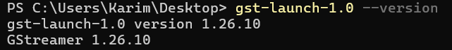
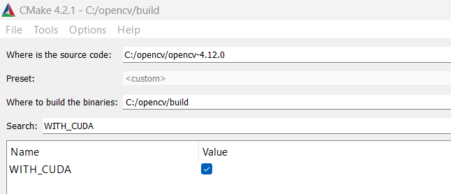
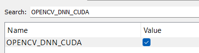
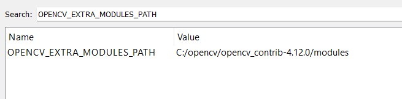
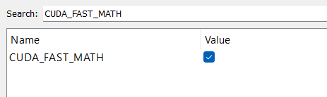
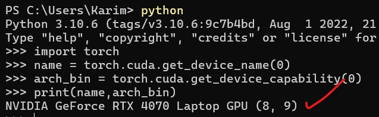
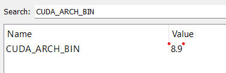
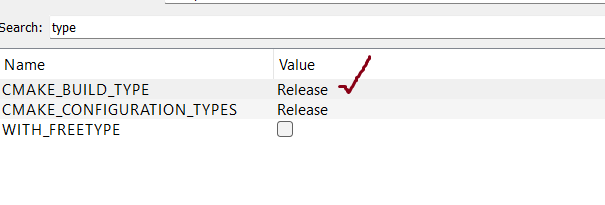
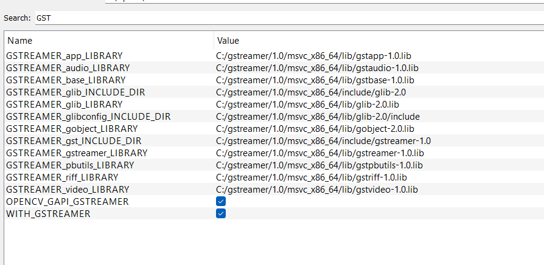

Prerequisites
Step 1: Install NVIDIA App and GPU Driver
Download NVIDIA AppDownload and install the NVIDIA App from the official website. Follow the instructions to install the NVIDIA GPU graphics driver compatible with your system.
Step 2: Install Visual Studio 2019
Download Visual Studio 2019Download and install Visual Studio 2019. During installation, select the Desktop development with C++ workload.
Step 3: Install CMake 4.2.1 or Later
Download CMakeDownload and install the latest version of CMake.
Step 4: Install CUDA Toolkit 12.8
Download CUDA Toolkit 12.8Download and install the CUDA Toolkit 12.8 from NVIDIA.
In this example, I have used a screenshot of CUDA 11.8, but the process is the same.


C:\Program Files\NVIDIA GPU Computing Toolkit\CUDA\v12.8
Step 5: Install cuDNN for CUDA 12.x
Download cuDNNDownload cuDNN for CUDA 12.x, extract the ZIP, and copy the files to the appropriate CUDA directories
(bin, include, lib/x64).
Step 6: Install GStreamer (Runtime & Development)
Download GStreamerDownload and install the GStreamer MSVC 64-bit Runtime and Development Installer.
Install GStreamer to C:\gstreamer and add the following environment variables:
GST_PLUGIN_PATH=C:\gstreamer\1.0\msvc_x86_64\lib\gstreamer-1.0GST_PLUGIN_SCANNER=C:\gstreamer\1.0\msvc_x86_64\libexec\gstreamer-1.0\gst-plugin-scanner.exeGSTREAMER_1_0_ROOT_MSVC_X86_64=C:\gstreamer\1.0\msvc_x86_64GSTREAMER_ROOT=C:\gstreamer\1.0\msvc_x86_64Path=C:\gstreamer\1.0\msvc_x86_64\bin
Step 7: Install Python 3.10.6 and Required Packages
Download and install Python 3.10.6.
Uninstall any existing numpy, opencv-python, and
opencv-contrib-python:
pip uninstall opencv-python opencv-contrib-python numpy
Install numpy 1.24.6:
pip install numpy==1.24.6
Step 8: Install PyTorch and Ultralytics
PyTorch official websiteInstall PyTorch with CUDA 12.8 support:
pip3 install torch torchvision --index-url https://download.pytorch.org/whl/cu128

Install Ultralytics (for YOLO models and other computer vision tasks):
pip install ultralytics
Check and Verify Versions
- Python
- numpy
- GStreamer 
- CUDA
- GPU


Step 9: Download OpenCV Source Code
OpenCV Releases OpenCV ContribDownload the latest OpenCV and OpenCV contrib source code:

Extract both to C:\opencv:
C:\opencv\opencv_4.14.0C:\opencv\opencv_contrib_4.14.0- Create
C:\opencv\build(empty directory for build output)
Step 10: Configure and Build OpenCV with CMake
- Open CMake GUI.
- Set Where is the source code: to
C:\opencv\opencv_4.14.0 - Set Where to build the binaries: to
C:\opencv\build - Click Configure, select "Visual Studio 16 2019" and "x64", then click Finish.


After configuration, enable the following options:
-
WITH_CUDA

-
OPENCV_DNN_CUDA

-
OPENCV_EXTRA_MODULES_PATH (set to
C:\opencv\opencv_contrib_4.14.0\modules) -
CUDA_FAST_MATH

-
CUDA_ARCH_BIN: Set to your GPU's compute capability into single code (e.g.,
'8.9')  -
CMAKE_BUILD_TYPE: Set to
Release -
WITH_GSTREAMER

Hit to Configure button after set each option to update the cmake options after that set the below
After checking all and configuring, then check the output.
also check the numpy and python must present like this figure
Click Configure again, then Generate, and finally Open Project to open in Visual Studio 2019.
In Visual Studio, right-click ALL_BUILD and select Build.
After building, right-click INSTALL and select Build to install.

Step 11: Verify the Installation
first to open termain and test the opencv to know is installed or no but when build wiht gstramer sameting get this errro about dll file

Open a Python shell and run the following code to verify OpenCV with CUDA and GStreamer support:
import os
os.add_dll_directory(r'C:\opencv\build\install\x64\vc16\bin')
os.add_dll_directory(r'C:\gstreamer\1.0\msvc_x86_64\bin')
import cv2
print("OpenCV:", cv2.__version__)
print("CUDA devices:", cv2.cuda.getCudaEnabledDeviceCount())
pipeline = (
"filesrc location=sample_test_video.mp4 ! "
"decodebin ! "
"videoconvert ! "
"appsink"
)
cap = cv2.VideoCapture(pipeline, cv2.CAP_GSTREAMER)
if not cap.isOpened():
print("❌ Failed to open video")
exit()
WIDTH, HEIGHT = 640, 360
gpu_frame = cv2.cuda_GpuMat()
while True:
ret, frame = cap.read()
if not ret:
break
# Upload to GPU
gpu_frame.upload(frame)
# GPU resize
gpu_small = cv2.cuda.resize(gpu_frame, (WIDTH, HEIGHT))
# Download once
frame_small = gpu_small.download()
cv2.imshow("GStreamer + CUDA", frame_small)
if cv2.waitKey(1) & 0xFF == 27:
break
cap.release()
cv2.destroyAllWindows()